KEYNOTE SPEAKER
M. Mustain, S.Si.
- Deputy Director of GIBS & Principal of SMP GIBS
- Special Needs Practitioner — Certified Basic Therapist in ABA & CBT Enthusiast
- Punya blueprint nyata sistem inklusi di sekolah skala besar
"Dari Kelas dan Asrama ke Rumah:
Membangun Lingkungan Inklusif untuk Semua Anak"
Ini BUKAN webinar teori yang membosankan. Ini adalah sesi bedah kasus dan strategi praktis bagaimana membangun sistem inklusi yang nyata — dari ruang kelas, asrama, hingga di rumah.
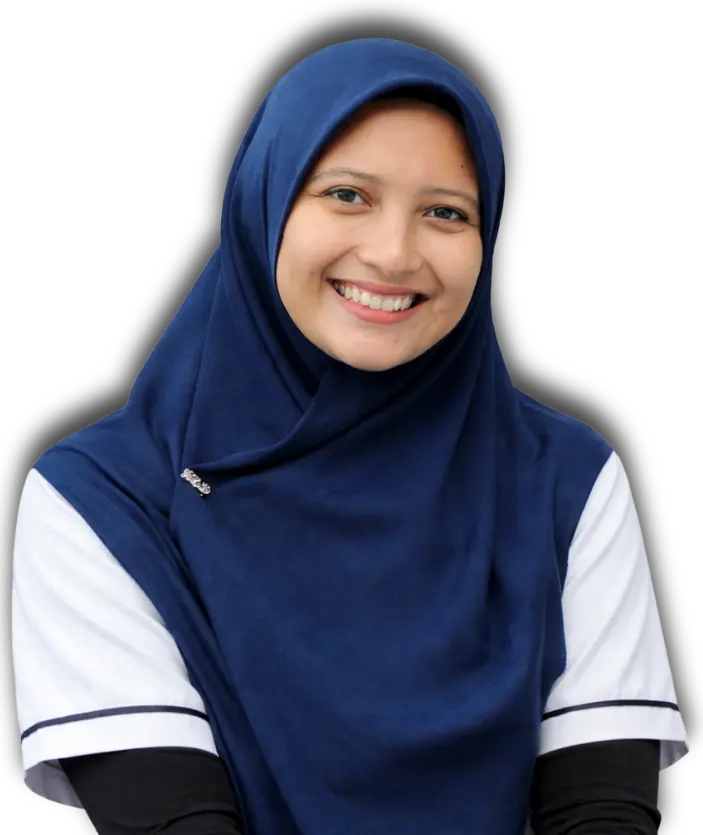
Tidak ada biaya pendaftaran standar. Seluruh sumbangan bersifat sukarela dan ditujukan untuk mendukung perluasan program inklusif kami.
⚠️ PERINGATAN KERAS UNTUK GURU, KEPSEK & ORANG TUA ⚠️
Faktanya: Label "Inklusi" tanpa skill psikologi terapan seperti ABA & CBT hanya menghasilkan guru yang burnout dan anak yang makin tertinggal.
JIKA ANDA MENJAWAB "YA", ANDA TIDAK SENDIRIAN
Bingung saat ada anak tantrum atau tidak fokus di kelas, dan cara teguran biasa sama sekali tidak mempan?
Merasa program "Inklusi" di sekolah hanya sebatas menerima siswa, tapi guru tidak dibekali alat ukur dan metode penanganan yang jelas?
Terjadi miss-komunikasi antara asrama/sekolah dengan orang tua di rumah, sehingga perkembangan anak tidak konsisten?
Pendidikan inklusif bukan sekadar niat baik.
Dibutuhkan strategi terukur, bukan sekadar teori psikologi yang membingungkan.
Setiap hari Anda menunda belajar ilmu ini... ada anak yang potensi terpendamnya gagal dimaksimalkan karena penanganan yang salah.
MENGAPA ANDA WAJIB MENDENGAR DARI MEREKA?
Mereka tidak hanya berbicara teori — mereka telah membangun dan menjalankan sistem inklusi nyata di sekolah asrama skala besar. Apa yang akan Anda pelajari adalah hal yang sudah terbukti bekerja.
Hari / Tanggal
Jum'at, 24 April 2026
Waktu
08.00 WIB / 09.00 WITA
Tempat
Zoom Meeting (Link khusus pendaftar)
👇 JANGAN LEWATKAN, DAFTAR SEKARANG! 👇
🖱️ KLIK DI SINI UNTUK AMANKAN KURSI ANDADirector of GIBS Junior and Senior High School
Pakar Pendidikan dan Master Trainer di HAFECS dengan rekam jejak lebih dari 25 tahun di bidang pengembangan sumber daya Manusia. Aktif di berbagai konferensi internasional. Spesialis dalam Teaching Mastery Framework (TMF), Active Based Enriched Curriculum (ABEC), serta pendekatan inovatif Linear Extrapolation.
Deputy Director and Senior Trainer HAFECS
Pengalamannya mencakup program Fellowship Teacher di Australia, dosen praktisi di UNY, ULM, UPR dan IAIN Palangkaraya. Edutech enthusiast dan aktif dalam konferensi pendidikan, teknologi dan knowledge management di Indonesia, Singapura, UEA, Malaysia, dan Afrika Selatan.
Head of Department Teaching and Learning Certification by HAFECS
Senior trainer, Asesor dan guru bersertifikat dengan 13+ tahun pengalaman pendidikan. Ahli Teaching Mastery Framework (TMF), pengembangan metode ajar, penyusunan lesson plan efektif, penerapan taksonomi Bloom, leadership, manajemen kelas, dan penguatan keterampilan berpikir. Pembicara di 30+ kota/kabupaten se-Indonesia.
Head of Curriculum and Content Development Department
Trainer dan guru pembelajar dengan pengalaman transformatif, aktif berkontribusi dalam seminar, workshop, dan pelatihan bagi praktisi pendidikan. Percaya bahwa pembelajaran sepanjang hayat adalah kunci inovasi.
Senior Trainer
Senior trainer di HAFECS dengan pengalaman komprehensif selama 12 tahun sebagai guru dan trainer profesional. Berkontribusi melalui program-program pelatihan di lebih dari 50 kota di seluruh wilayah Indonesia.
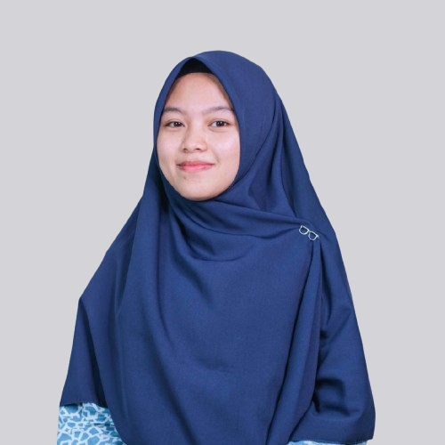
Koordinator Calon Guru Muda Inovatif Indonesia
Telah melatih di dinas dan instansi pendidikan sebanyak 40+ di berbagai wilayah Indonesia, berkontribusi pada pengembangan profesionalisme tenaga pendidik di tanah air.
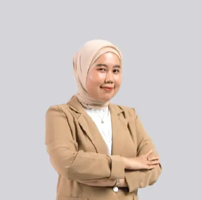
Program Development Strategist of Teaching & Learning Certification Department
Trainer & Content Maker di bidang pendidikan, aktif dalam penulisan buku, artikel ilmiah, podcast, dan video pembelajaran interaktif. Telah memfasilitasi ratusan sesi training di berbagai dinas dan instansi pendidikan. Pembicara konferensi internasional.
Dokumentasi pelatihan kami di berbagai daerah di Indonesia
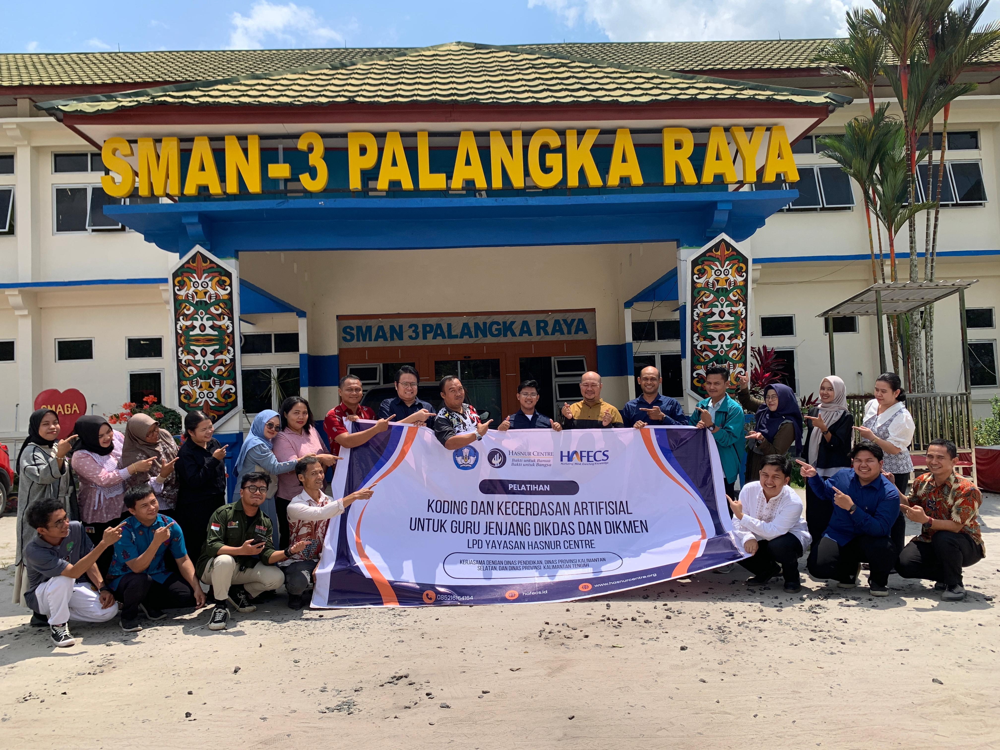
28 Juli - 1 Agustus 2025
Pelatihan Koding dan Kecerdasan Artificial
Lihat Detail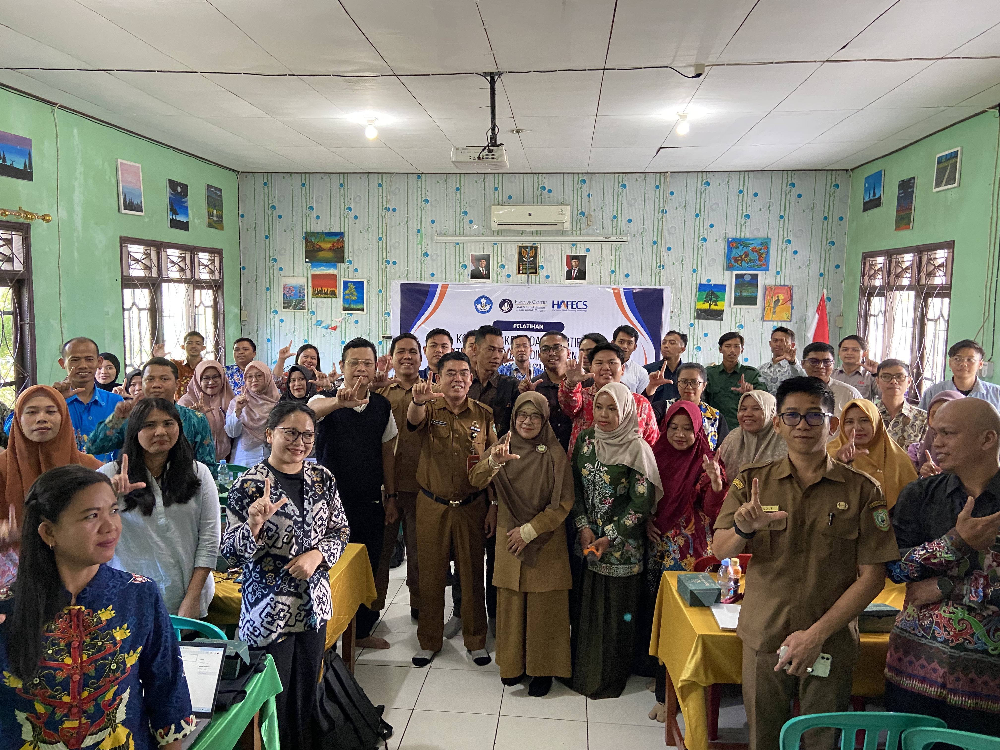
21 - 25 Agustus 2025
Pelatihan Koding dan Kecerdasan Artifisial
Lihat Detail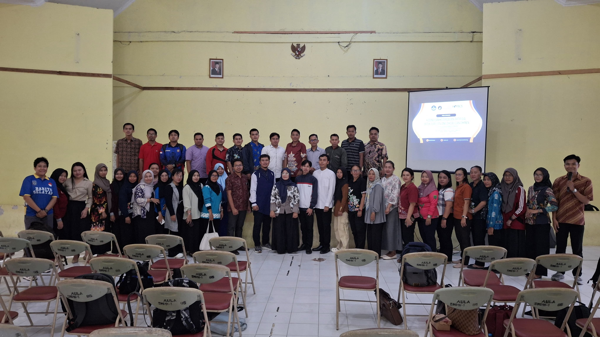
7 - 11 Agustus 2025
Pelatihan Koding dan Kecerdasan Artifisial
Lihat Detail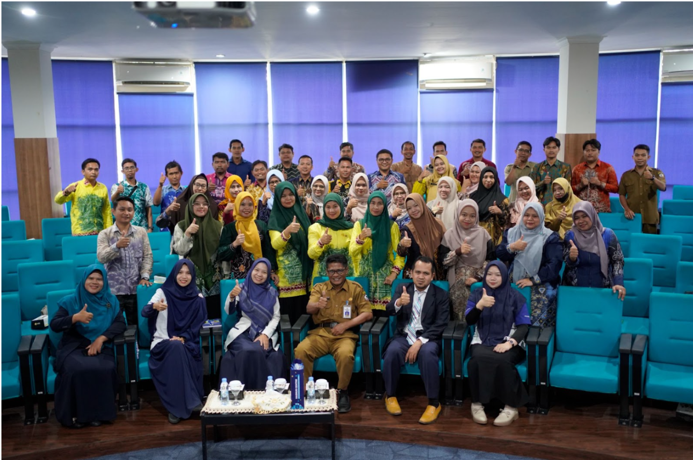
18 Juli - 1 Agustus 2025
Pelatihan Koding dan Kecerdasan Artifisial
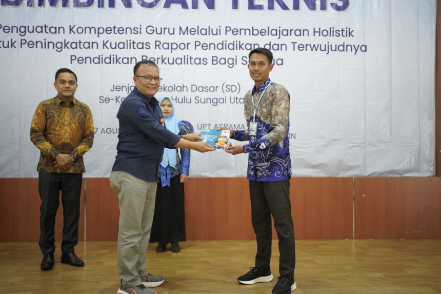
5 - 7 Agustus 2025
Pembelajaran Holistik untuk Meningkatkan Kualitas Rapor Pendidikan
Lihat Detail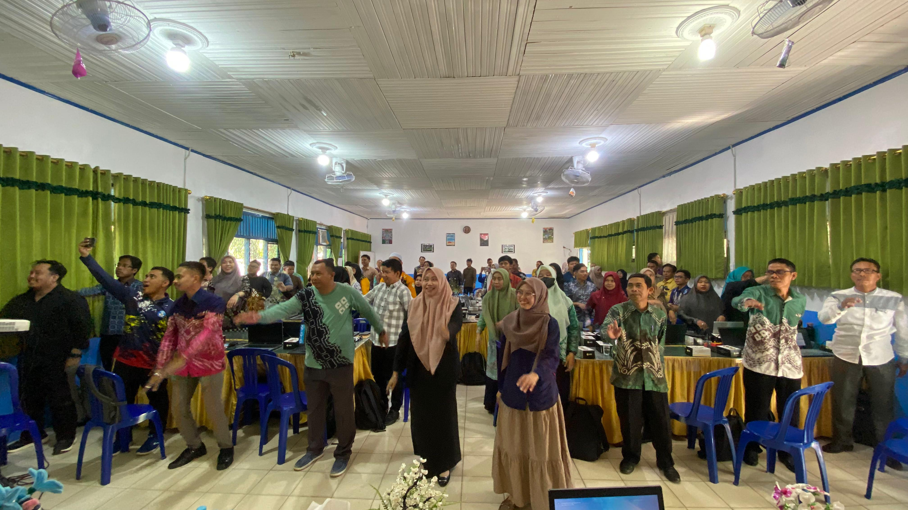
28 Juli - 1 Agustus 2025
Pelatihan Koding dan Kecerdasan Artifisial
Bukti resmi penyelesaian dan kompetensi yang telah diakui secara profesional
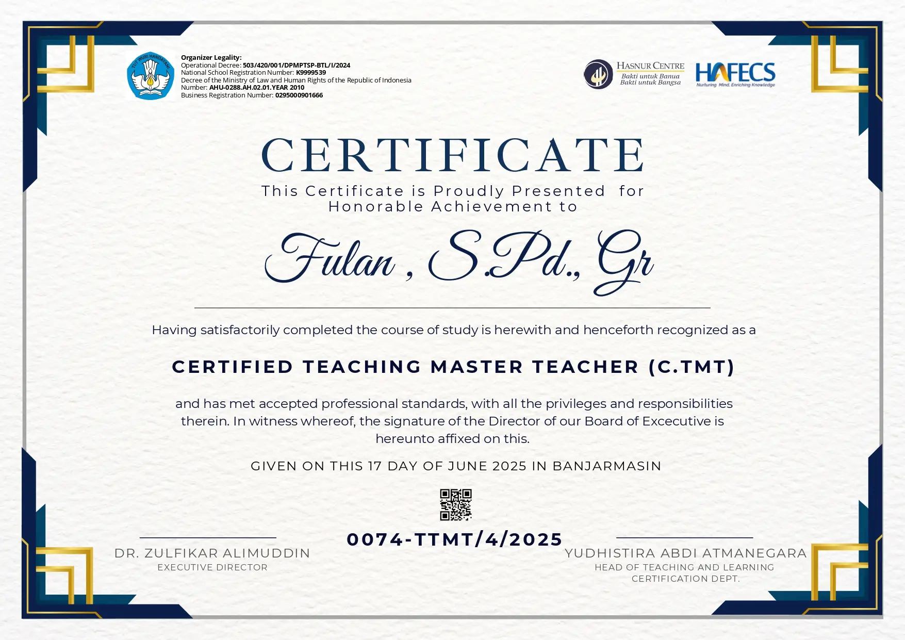
Tingkatkan skill dan portofoliomu dengan berbagai fasilitas premium yang kami sediakan
Belajar langsung bersama Trainer
Bantuan langsung setiap saat
Akses materi secara terstruktur
Pengakuan atas prestasi belajar
Akses materi kapan saja
Bangun profil profesional
Bukti resmi kemampuan
*Syarat dan Ketentuan Berlaku
Guru SMAN 1 Balai Riam, Kab. Sukamara
Setelah mengikuti ElevateClass Series HAFECS, saya mendapatkan banyak wawasan baru, khususnya dalam literasi, numerasi, dan pendekatan pembelajaran berbasis teknologi. Materinya aplikatif dan sangat membantu meningkatkan kualitas pengajaran saya di kelas.
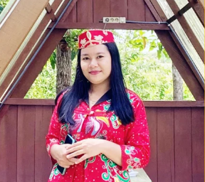
TKN Pembina Jekan Jaya
Dari hasil mengikuti ElevateClass HAFECS, saya mendapatkan banyak ilmu, pelajaran, dan teman-teman baru. Saya belajar berbagai permainan edukatif yang memanfaatkan potensi diri. Ilmu-ilmu baru ini sangat bermanfaat.
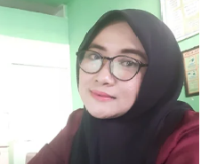
Elementary School Teacher
Setelah mengikuti program ElevateClass, saya memiliki lebih banyak teknik dan strategi untuk membuat kelas saya lebih interaktif. Saya juga mendapatkan jaringan profesional yang luas dari sesama pendidik di seluruh Indonesia.
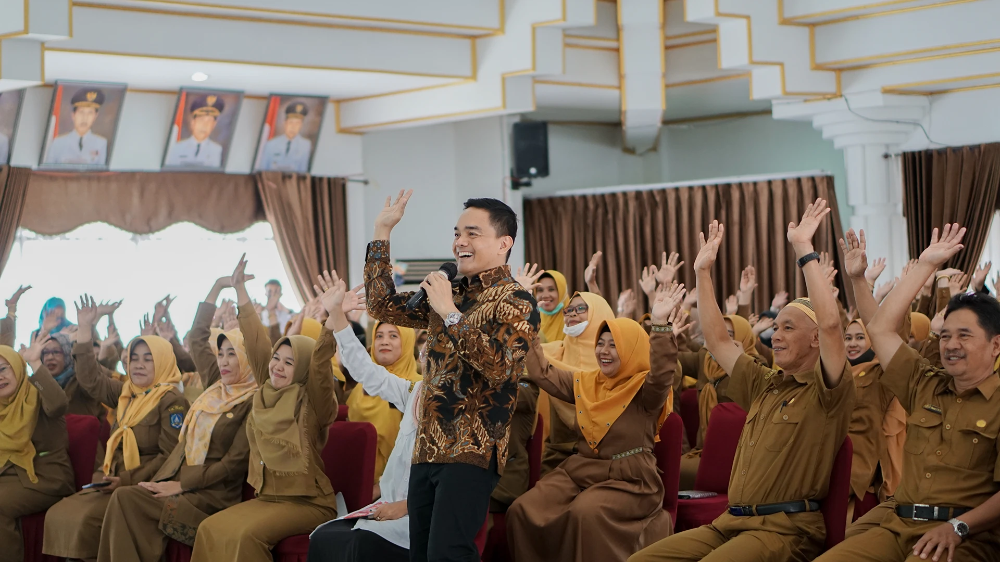
Highly Functioning Education Consulting Services (HAFECS) adalah lembaga yang didedikasikan untuk memajukan kualitas pendidikan di Indonesia melalui pengembangan kompetensi guru dan tenaga pendidik.
Kami percaya bahwa kunci transformasi pendidikan terletak pada kualitas pengajaran. Oleh karena itu, HAFECS hadir dengan metode pelatihan inovatif yang menggabungkan teori pedagogi modern dengan praktik terbaik di lapangan.